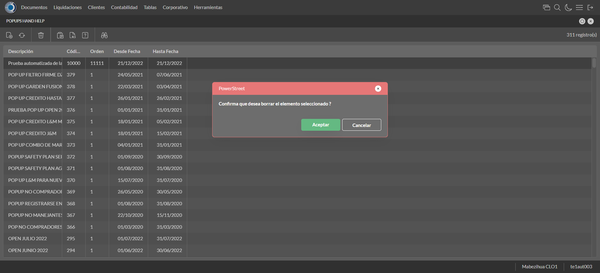

Desarrollado por : Area de Testing PWST
Fecha y hora de inicio : 2022-12-21 10:12:48
Duracion : 0:03:35.207667
Resultado : Total 27，Correctos 26 ，Errores 1 ，Taza de resultado 96.30%
Resumen 96.30% Errores 1 Fallidos 0 Correctos 26 Test realizados 27
| Caso de Prueba | Total | Correctos | Fallido | Error | Detalles | Captura del error |
| ScriptAmarillo.Test: Script Amarillo | 27 | 26 | 0 | 1 | Detalles | |
test |
ft1_1: 2022-12-21 10:12:49,269 - root - INFO - Se abre el chrome
2022-12-21 10:12:50,438 - root - INFO - Entra a la URL
2022-12-21 10:12:50,561 - root - INFO - Maximiza la pantalla
Traceback (most recent call last):
File "C:\Users\jsand\AppData\Local\Programs\Python\Python310\lib\site-packages\selenium-4.4.0-py3.10.egg\selenium\webdriver\remote\switch_to.py", line 87, in frame
frame_reference = self._driver.find_element(By.ID, frame_reference)
File "C:\Users\jsand\AppData\Local\Programs\Python\Python310\lib\site-packages\selenium-4.4.0-py3.10.egg\selenium\webdriver\remote\webdriver.py", line 856, in find_element
return self.execute(Command.FIND_ELEMENT, {
File "C:\Users\jsand\AppData\Local\Programs\Python\Python310\lib\site-packages\selenium-4.4.0-py3.10.egg\selenium\webdriver\remote\webdriver.py", line 434, in execute
self.error_handler.check_response(response)
File "C:\Users\jsand\AppData\Local\Programs\Python\Python310\lib\site-packages\selenium-4.4.0-py3.10.egg\selenium\webdriver\remote\errorhandler.py", line 243, in check_response
raise exception_class(message, screen, stacktrace)
selenium.common.exceptions.NoSuchElementException: Message: no such element: Unable to locate element: {"method":"css selector","selector":"[id="mainFrame"]"}
(Session info: chrome=108.0.5359.125)
Stacktrace:
Backtrace:
(No symbol) [0x00BFF243]
(No symbol) [0x00B87FD1]
(No symbol) [0x00A7D04D]
(No symbol) [0x00AAC0B0]
(No symbol) [0x00AAC22B]
(No symbol) [0x00ADE612]
(No symbol) [0x00AC85D4]
(No symbol) [0x00ADC9EB]
(No symbol) [0x00AC8386]
(No symbol) [0x00AA163C]
(No symbol) [0x00AA269D]
GetHandleVerifier [0x00E99A22+2655074]
GetHandleVerifier [0x00E8CA24+2601828]
GetHandleVerifier [0x00CA8C0A+619850]
GetHandleVerifier [0x00CA7830+614768]
(No symbol) [0x00B905FC]
(No symbol) [0x00B95968]
(No symbol) [0x00B95A55]
(No symbol) [0x00BA051B]
BaseThreadInitThunk [0x76796BD9+25]
RtlGetFullPathName_UEx [0x77B58FD2+1218]
RtlGetFullPathName_UEx [0x77B58F9D+1165]
During handling of the above exception, another exception occurred:
Traceback (most recent call last):
File "C:\Users\jsand\AppData\Local\Programs\Python\Python310\lib\site-packages\selenium-4.4.0-py3.10.egg\selenium\webdriver\remote\switch_to.py", line 90, in frame
frame_reference = self._driver.find_element(By.NAME, frame_reference)
File "C:\Users\jsand\AppData\Local\Programs\Python\Python310\lib\site-packages\selenium-4.4.0-py3.10.egg\selenium\webdriver\remote\webdriver.py", line 856, in find_element
return self.execute(Command.FIND_ELEMENT, {
File "C:\Users\jsand\AppData\Local\Programs\Python\Python310\lib\site-packages\selenium-4.4.0-py3.10.egg\selenium\webdriver\remote\webdriver.py", line 434, in execute
self.error_handler.check_response(response)
File "C:\Users\jsand\AppData\Local\Programs\Python\Python310\lib\site-packages\selenium-4.4.0-py3.10.egg\selenium\webdriver\remote\errorhandler.py", line 243, in check_response
raise exception_class(message, screen, stacktrace)
selenium.common.exceptions.NoSuchElementException: Message: no such element: Unable to locate element: {"method":"css selector","selector":"[name="mainFrame"]"}
(Session info: chrome=108.0.5359.125)
Stacktrace:
Backtrace:
(No symbol) [0x00BFF243]
(No symbol) [0x00B87FD1]
(No symbol) [0x00A7D04D]
(No symbol) [0x00AAC0B0]
(No symbol) [0x00AAC22B]
(No symbol) [0x00ADE612]
(No symbol) [0x00AC85D4]
(No symbol) [0x00ADC9EB]
(No symbol) [0x00AC8386]
(No symbol) [0x00AA163C]
(No symbol) [0x00AA269D]
GetHandleVerifier [0x00E99A22+2655074]
GetHandleVerifier [0x00E8CA24+2601828]
GetHandleVerifier [0x00CA8C0A+619850]
GetHandleVerifier [0x00CA7830+614768]
(No symbol) [0x00B905FC]
(No symbol) [0x00B95968]
(No symbol) [0x00B95A55]
(No symbol) [0x00BA051B]
BaseThreadInitThunk [0x76796BD9+25]
RtlGetFullPathName_UEx [0x77B58FD2+1218]
RtlGetFullPathName_UEx [0x77B58F9D+1165]
During handling of the above exception, another exception occurred:
Traceback (most recent call last):
File "C:\xampp\htdocs\versiones\automatizaciones\AutoPWST\ScriptAmarillo\testCase\ScriptAmarillo.py", line 69, in test
self.driver.switch_to.frame("mainFrame")
File "C:\Users\jsand\AppData\Local\Programs\Python\Python310\lib\site-packages\selenium-4.4.0-py3.10.egg\selenium\webdriver\remote\switch_to.py", line 92, in frame
raise NoSuchFrameException(frame_reference)
selenium.common.exceptions.NoSuchFrameException: Message: mainFrame
|
|
||||
test_000: Ingresa a la base de datos |
pt1_2: 2022-12-21 10:12:53,770 - root - INFO - Escribe el usuario
2022-12-21 10:12:53,892 - root - INFO - Escribe la contraseña
2022-12-21 10:12:53,999 - root - INFO - Se dio clic en el boton ingresar
2022-12-21 10:12:54,690 - root - INFO - Ejecutar Enterprise
2022-12-21 10:12:58,756 - root - INFO - Cambia entre pestañas
|
|
||||
test_001: Ingresa a pantalla Objetivos Diarios |
pt1_3: 2022-12-21 10:13:07,743 - root - INFO - Abre la pantalla de Objetivos Diarios
2022-12-21 10:13:08,297 - root - INFO - La pantalla ejecutada es Lista de precios.
2022-12-21 10:13:08,298 - root - INFO - Captura: C:\xampp\htdocs\versiones\automatizaciones\AutoPWST\ScriptAmarillo\report\img screen：20221221_10_13_08.png
2022-12-21 10:13:08,470 - root - INFO - Se presiona el boton 'Refrescar', para crear un nuevo registro igual al anterior.
2022-12-21 10:13:18,973 - root - INFO - Se presiona el boton 'Nuevo', para crear un nuevo registro.
|

|
||||
test_002: Agregar Objetivos Diarios |
pt1_4: 2022-12-21 10:13:19,550 - root - INFO - Se abrio la pantalla para el ingreso de un registro nuevo.
2022-12-21 10:13:19,578 - root - INFO - El campo 'Vendedor' si se encuentra visible.
2022-12-21 10:13:19,604 - root - INFO - El campo 'Fecha' si se encuentra visible.
2022-12-21 10:13:19,632 - root - INFO - El campo 'Efectividad %' si se encuentra visible.
2022-12-21 10:13:21,095 - root - INFO - Ingresa la efectividad del nuevo registro
2022-12-21 10:13:23,111 - root - INFO - Captura: C:\xampp\htdocs\versiones\automatizaciones\AutoPWST\ScriptAmarillo\report\img screen：20221221_10_13_23.png
2022-12-21 10:13:23,320 - root - INFO - Se hace el cambio de pestaña para continuar con el registro nuevo
2022-12-21 10:13:23,927 - root - INFO - Se presiona el boton 'Nuevo', para crear un nuevo registro.
2022-12-21 10:13:24,486 - root - INFO - El campo 'Grupo Política' si se encuentra visible.
2022-12-21 10:13:24,514 - root - INFO - El campo 'Tipo Objetivo' si se encuentra visible.
2022-12-21 10:13:24,542 - root - INFO - El campo 'Tipo Unidad' si se encuentra visible.
2022-12-21 10:13:24,569 - root - INFO - El campo 'Objetivo Cantidad' si se encuentra visible.
2022-12-21 10:13:24,601 - root - INFO - El campo 'Objetivo Cobertura' si se encuentra visible.
2022-12-21 10:13:26,480 - root - INFO - Ingresa el Objetivo Cantidad del nuevo registro
2022-12-21 10:13:26,543 - root - INFO - Ingresa el Objetivo Cobertura del nuevo registro
2022-12-21 10:13:26,596 - root - INFO - Se da clic en el boton Guardar; se debe crear un nuevo registro.
2022-12-21 10:13:26,785 - root - INFO - Se da clic en el boton Guardar; se debe crear un nuevo registro.
|

|
||||
test_003: Repetir Registro Objetivos Diarios |
pt1_5: 2022-12-21 10:13:27,021 - root - INFO - Se presiona el boton 'Refrescar', para crear un nuevo registro igual al anterior.
2022-12-21 10:13:32,071 - root - INFO - Se presiona el boton 'Nuevo', para crear un nuevo registro igual al anterior.
2022-12-21 10:13:32,641 - root - INFO - Se abrio la pantalla para el ingreso de un registro nuevo.
2022-12-21 10:13:32,668 - root - INFO - El campo 'Vendedor' si se encuentra visible.
2022-12-21 10:13:32,693 - root - INFO - El campo 'Fecha' si se encuentra visible.
2022-12-21 10:13:32,726 - root - INFO - El campo 'Efectividad %' si se encuentra visible.
2022-12-21 10:13:34,211 - root - INFO - Ingresa la efectividad del nuevo registro
2022-12-21 10:13:34,262 - root - INFO - Se da clic en el boton Guardar; se debe crear un nuevo registro.
2022-12-21 10:13:36,276 - root - INFO - Captura: C:\xampp\htdocs\versiones\automatizaciones\AutoPWST\ScriptAmarillo\report\img screen：20221221_10_13_36.png
2022-12-21 10:13:36,492 - root - INFO - Se presiona el boton 'Cerrar', para cerrar el mensaje de duplicidad de llave primaria
2022-12-21 10:13:36,614 - root - INFO - Se presiona el boton 'Cerrar', para cerrar la ventana
|
|||||
test_004: Modifica Objetivos Diarios |
pt1_6: 2022-12-21 10:13:36,729 - root - INFO - Se presiona el boton 'Refrescar', para crear un nuevo registro igual al anterior.
2022-12-21 10:13:38,385 - root - INFO - Se da clic en el registro creado, para proceder a modificarlo.
2022-12-21 10:13:39,024 - root - INFO - Ingresa la efectividad del nuevo registro
2022-12-21 10:13:41,050 - root - INFO - Captura: C:\xampp\htdocs\versiones\automatizaciones\AutoPWST\ScriptAmarillo\report\img screen：20221221_10_13_41.png
2022-12-21 10:13:41,242 - root - INFO - Se hace el cambio de pestaña para continuar con el registro nuevo
2022-12-21 10:13:42,334 - root - INFO - Se da clic en el registro creado, para proceder a modificarlo.
2022-12-21 10:13:44,502 - root - INFO - Ingresa el Objetivo Cantidad del nuevo registro
2022-12-21 10:13:44,597 - root - INFO - Ingresa el Objetivo Cobertura del nuevo registro
2022-12-21 10:13:44,652 - root - INFO - Se da clic en el boton Guardar; se debe crear un nuevo registro.
2022-12-21 10:13:44,816 - root - INFO - Se da clic en el boton Guardar; se debe modificar la informacion del registro.
|

|
||||
test_005: Elimina Objetivos Diarios |
pt1_7: 2022-12-21 10:13:44,997 - root - INFO - Se presiona el boton 'Refrescar', para proceder a eliminar el registro.
2022-12-21 10:13:46,611 - root - INFO - Se da clic en el registro creado, para proceder a eliminarlo.
2022-12-21 10:13:46,681 - root - INFO - Se presiona el boton 'Eliminar', para eliminar el registro.
2022-12-21 10:13:48,685 - root - INFO - Captura: C:\xampp\htdocs\versiones\automatizaciones\AutoPWST\ScriptAmarillo\report\img screen：20221221_10_13_48.png
2022-12-21 10:13:48,893 - root - INFO - Se confirma el eliminado del registro
2022-12-21 10:13:49,065 - root - INFO - Se presiona el boton 'Refrescar', para crear un nuevo registro igual al anterior.
2022-12-21 10:13:49,198 - root - INFO - Se presiona el boton 'Cerrar', para cerrar la pantalla de Categorias Fiscales.
|

|
||||
test_006: Ingresa a pantalla Pop Ups |
pt1_8: 2022-12-21 10:13:50,146 - root - INFO - Abre la pantalla de PopUps
2022-12-21 10:13:50,799 - root - INFO - La pantalla ejecutada es PopUps.
2022-12-21 10:13:51,807 - root - INFO - Captura: C:\xampp\htdocs\versiones\automatizaciones\AutoPWST\ScriptAmarillo\report\img screen：20221221_10_13_51.png
2022-12-21 10:13:53,131 - root - INFO - Se ordenó por codigo.
2022-12-21 10:14:03,687 - root - INFO - Se presiona el boton 'Nuevo', para crear un nuevo registro.
|

|
||||
test_007: Agregar Pop Ups |
pt1_9: 2022-12-21 10:14:04,232 - root - INFO - Se abrio la pantalla para el ingreso de un registro nuevo.
2022-12-21 10:14:04,259 - root - INFO - El campo 'Codigo' si se encuentra visible.
2022-12-21 10:14:04,288 - root - INFO - El campo 'Orden' si se encuentra visible.
2022-12-21 10:14:04,318 - root - INFO - El campo 'Activo' si se encuentra visible.
2022-12-21 10:14:04,348 - root - INFO - El campo 'Descrición' si se encuentra visible.
2022-12-21 10:14:04,376 - root - INFO - El campo 'Modo Visualización' si se encuentra visible.
2022-12-21 10:14:04,405 - root - INFO - El campo 'Tipo Popup' si se encuentra visible.
2022-12-21 10:14:04,460 - root - INFO - El campo 'Fecha Desde' si se encuentra visible.
2022-12-21 10:14:04,489 - root - INFO - El campo 'Fecha Hasta' si se encuentra visible.
2022-12-21 10:14:04,517 - root - INFO - El campo 'Texto' si se encuentra visible.
2022-12-21 10:14:04,545 - root - INFO - El campo 'Seleccione Imagen' si se encuentra visible.
2022-12-21 10:14:04,590 - root - INFO - Ingresa el codigo del nuevo registro
2022-12-21 10:14:04,680 - root - INFO - Ingresa la orden del nuevo registro
2022-12-21 10:14:05,784 - root - INFO - Hizo click en el checkbox Activo
2022-12-21 10:14:05,978 - root - INFO - Ingresa la descripción del nuevo registro
2022-12-21 10:14:06,321 - root - INFO - Se dió click en la opción Pantalla Held.
2022-12-21 10:14:07,559 - root - INFO - Se dió doble click en el registro de Tipo Pop Up.
2022-12-21 10:14:07,729 - root - INFO - Ingresa el texto del nuevo registro
2022-12-21 10:14:08,733 - root - INFO - Captura: C:\xampp\htdocs\versiones\automatizaciones\AutoPWST\ScriptAmarillo\report\img screen：20221221_10_14_08.png
2022-12-21 10:14:08,928 - root - INFO - Se da clic en el boton Guardar; se debe crear un nuevo registro.
|

|
||||
test_008: Repetir Registro Pop Ups |
pt1_10: 2022-12-21 10:14:09,191 - root - INFO - Se presiona el boton 'Refrescar', para crear un nuevo registro igual al anterior.
2022-12-21 10:14:09,830 - root - INFO - Se presiona el boton 'Nuevo', para crear un nuevo registro igual al anterior.
2022-12-21 10:14:10,406 - root - INFO - Se abrio la pantalla para el ingreso de un registro nuevo.
2022-12-21 10:14:10,460 - root - INFO - El campo 'Codigo' si se encuentra visible.
2022-12-21 10:14:10,486 - root - INFO - El campo 'Orden' si se encuentra visible.
2022-12-21 10:14:10,511 - root - INFO - El campo 'Activo' si se encuentra visible.
2022-12-21 10:14:10,540 - root - INFO - El campo 'Descrición' si se encuentra visible.
2022-12-21 10:14:10,565 - root - INFO - El campo 'Modo Visualización' si se encuentra visible.
2022-12-21 10:14:10,592 - root - INFO - El campo 'Tipo Popup' si se encuentra visible.
2022-12-21 10:14:10,619 - root - INFO - El campo 'Fecha Desde' si se encuentra visible.
2022-12-21 10:14:10,644 - root - INFO - El campo 'Fecha Hasta' si se encuentra visible.
2022-12-21 10:14:10,669 - root - INFO - El campo 'Texto' si se encuentra visible.
2022-12-21 10:14:10,696 - root - INFO - El campo 'Seleccione Imagen' si se encuentra visible.
2022-12-21 10:14:10,758 - root - INFO - Ingresa el codigo del nuevo registro
2022-12-21 10:14:10,829 - root - INFO - Ingresa la orden del nuevo registro
2022-12-21 10:14:11,911 - root - INFO - Hizo click en el checkbox Activo
2022-12-21 10:14:12,076 - root - INFO - Ingresa la descripción del nuevo registro
2022-12-21 10:14:12,462 - root - INFO - Se dió click en la opción Pantalla Hand Held.
2022-12-21 10:14:13,351 - root - INFO - Se dió doble click en el registro de Tipo PopUp.
2022-12-21 10:14:13,563 - root - INFO - Ingresa el texto del nuevo registro
2022-12-21 10:14:13,636 - root - INFO - Se da clic en el boton Guardar; NO se debe crear un nuevo registro.
2022-12-21 10:14:14,644 - root - INFO - Captura: C:\xampp\htdocs\versiones\automatizaciones\AutoPWST\ScriptAmarillo\report\img screen：20221221_10_14_14.png
2022-12-21 10:14:14,904 - root - INFO - Se presiona el boton 'Cerrar', para cerrar el mensaje de duplicidad de llave primaria
2022-12-21 10:14:15,036 - root - INFO - Se presiona el boton 'Cerrar', para cerrar la ventana
|
|||||
test_009: Modifica Pop Ups |
pt1_11: 2022-12-21 10:14:15,136 - root - INFO - Se presiona el boton 'Refrescar', para proceder a modificar el registro.
2022-12-21 10:14:16,870 - root - INFO - Se dió dos veces click en el encabezado para modificar el orden de los registros.
2022-12-21 10:14:19,044 - root - INFO - Se da clic en el registro creado, para proceder a modificarlo.
2022-12-21 10:14:19,670 - root - INFO - Se modifica el contenido del campo Orden
2022-12-21 10:14:20,793 - root - INFO - Hizo click en el checkbox activo
2022-12-21 10:14:21,066 - root - INFO - Se modifica el contenido del campo Descripción
2022-12-21 10:14:21,441 - root - INFO - Se dió click en la opción Ambos.
2022-12-21 10:14:22,404 - root - INFO - Se dió doble click en el registro de Tipo PopUp.
2022-12-21 10:14:22,684 - root - INFO - Se modifica el contenido del campo Texto
2022-12-21 10:14:23,688 - root - INFO - Captura: C:\xampp\htdocs\versiones\automatizaciones\AutoPWST\ScriptAmarillo\report\img screen：20221221_10_14_23.png
2022-12-21 10:14:23,877 - root - INFO - Se da clic en el boton Guardar; se debe modificar la informacion del registro.
|

|
||||
test_010: Elimina PopUps |
pt1_12: 2022-12-21 10:14:24,101 - root - INFO - Se presiona el boton 'Refrescar', para proceder a eliminar el registro.
2022-12-21 10:14:25,743 - root - INFO - Se da clic en el registro creado, para proceder a eliminarlo.
2022-12-21 10:14:26,823 - root - INFO - Se presiona el boton 'Eliminar', para eliminar el registro.
2022-12-21 10:14:26,825 - root - INFO - Captura: C:\xampp\htdocs\versiones\automatizaciones\AutoPWST\ScriptAmarillo\report\img screen：20221221_10_14_26.png
2022-12-21 10:14:27,050 - root - INFO - Se confirma el eliminado del registro
2022-12-21 10:14:27,657 - root - INFO - Se presiona el boton 'Refrescar', para veriicar si el registro ha sido eliminado.
2022-12-21 10:14:28,243 - root - INFO - Se presiona el boton 'Cerrar', para cerrar la pantalla de Pop Ups.
|
 | ||||
test_011: Ingresa a pantalla Paquetes Formulario |
pt1_13: 2022-12-21 10:14:29,156 - root - INFO - Abre la pantalla de Paquetes de Formularios
2022-12-21 10:14:29,728 - root - INFO - Captura: C:\xampp\htdocs\versiones\automatizaciones\AutoPWST\ScriptAmarillo\report\img screen：20221221_10_14_29.png
2022-12-21 10:14:29,839 - root - INFO - La pantalla ejecutada es Zonas de Ventas.
2022-12-21 10:14:40,452 - root - INFO - Se presiona el boton 'Nuevo', para crear un nuevo registro.
|

|
||||
test_012: Agregar Paquetes Formulario |
pt1_14: 2022-12-21 10:14:41,006 - root - INFO - Se abrio la pantalla para el ingreso de un registro nuevo.
2022-12-21 10:14:41,034 - root - INFO - El campo 'Número Paquete' si se encuentra visible.
2022-12-21 10:14:41,064 - root - INFO - El campo 'Formulario Inicial' si se encuentra visible.
2022-12-21 10:14:41,091 - root - INFO - El campo 'Cantidad Formularios' si se encuentra visible.
2022-12-21 10:14:42,144 - root - INFO - Captura: C:\xampp\htdocs\versiones\automatizaciones\AutoPWST\ScriptAmarillo\report\img screen：20221221_10_14_42.png
2022-12-21 10:14:42,294 - root - INFO - Ingresa la cantidad de formularios del nuevo registro
2022-12-21 10:14:42,341 - root - INFO - Se da clic en el boton Guardar; se debe crear un nuevo registro.
|

|
||||
test_013: Modifica Paquetes Formulario |
pt1_15: 2022-12-21 10:14:42,517 - root - INFO - Se presiona el boton 'Refrescar', para crear un nuevo registro igual al anterior.
2022-12-21 10:14:44,705 - root - INFO - Se da clic en el registro creado, para proceder a modificarlo.
2022-12-21 10:14:45,722 - root - INFO - Captura: C:\xampp\htdocs\versiones\automatizaciones\AutoPWST\ScriptAmarillo\report\img screen：20221221_10_14_45.png
2022-12-21 10:14:45,913 - root - INFO - Se presiona el boton 'Cerrar', para cerrar la ventana
|

|
||||
test_014: Elimina Paquetes Formulario |
pt1_16: 2022-12-21 10:14:46,013 - root - INFO - Se presiona el boton 'Refrescar', para proceder a eliminar el registro.
2022-12-21 10:14:47,594 - root - INFO - Se da clic en el registro creado, para proceder a eliminarlo.
2022-12-21 10:14:47,644 - root - INFO - Se presiona el boton 'Eliminar', para eliminar el registro.
2022-12-21 10:14:48,651 - root - INFO - Captura: C:\xampp\htdocs\versiones\automatizaciones\AutoPWST\ScriptAmarillo\report\img screen：20221221_10_14_48.png
2022-12-21 10:14:48,846 - root - INFO - Se confirma el eliminado del registro
2022-12-21 10:14:48,963 - root - INFO - Se presiona el boton 'Refrescar', para crear un nuevo registro igual al anterior.
2022-12-21 10:14:49,083 - root - INFO - Se presiona el boton 'Cerrar', para cerrar la pantalla de Categorias Fiscales.
|

|
||||
test_015: Ingresa a pantalla Perfiles Comision |
pt1_17: 2022-12-21 10:14:49,955 - root - INFO - Abre la pantalla de Perfiles de Comisión
2022-12-21 10:14:50,514 - root - INFO - La pantalla ejecutada es Perfiles de Comisión.
2022-12-21 10:14:50,514 - root - INFO - Captura: C:\xampp\htdocs\versiones\automatizaciones\AutoPWST\ScriptAmarillo\report\img screen：20221221_10_14_50.png
2022-12-21 10:15:01,165 - root - INFO - Se presiona el boton 'Nuevo', para crear un nuevo registro.
|

|
||||
test_016: Agregar Perfiles Comision |
pt1_18: 2022-12-21 10:15:01,711 - root - INFO - Se abrio la pantalla para el ingreso de un registro nuevo.
2022-12-21 10:15:01,740 - root - INFO - El campo 'Codigo' si se encuentra visible.
2022-12-21 10:15:01,770 - root - INFO - El campo 'Descrición' si se encuentra visible.
2022-12-21 10:15:01,798 - root - INFO - El campo 'Porcentaje Global' si se encuentra visible.
2022-12-21 10:15:01,828 - root - INFO - El campo 'Con impuesto' si se encuentra visible.
2022-12-21 10:15:01,857 - root - INFO - El campo 'Comisión Repartidor' si se encuentra visible.
2022-12-21 10:15:01,931 - root - INFO - Ingresa el codigo del nuevo registro
2022-12-21 10:15:02,032 - root - INFO - Ingresa la descripción del nuevo registro
2022-12-21 10:15:02,090 - root - INFO - Ingresa el Porcentaje Global del nuevo registro
2022-12-21 10:15:02,142 - root - INFO - Se hizó click en el Checkbox Con impuesto
2022-12-21 10:15:02,193 - root - INFO - Se hizó click en el checkbox Comisión Repartidor
2022-12-21 10:15:03,199 - root - INFO - Captura: C:\xampp\htdocs\versiones\automatizaciones\AutoPWST\ScriptAmarillo\report\img screen：20221221_10_15_03.png
2022-12-21 10:15:03,370 - root - INFO - Se hace el cambio a la pestaña Topes para continuar con el registro nuevo
2022-12-21 10:15:03,967 - root - INFO - Se presiona el boton 'Nuevo', para crear un nuevo registro de Topes.
2022-12-21 10:15:04,511 - root - INFO - El campo 'Moneda' si se encuentra visible.
2022-12-21 10:15:04,544 - root - INFO - El campo 'Tope' si se encuentra visible.
2022-12-21 10:15:04,576 - root - INFO - El campo 'Porcentaje' si se encuentra visible.
2022-12-21 10:15:05,472 - root - INFO - Se dió doble click en el registro de Moneda.
2022-12-21 10:15:05,561 - root - INFO - Ingresa el tope del nuevo registro
2022-12-21 10:15:05,657 - root - INFO - Ingresa el Porcentaje del nuevo registro
2022-12-21 10:15:05,718 - root - INFO - Se da clic en el boton Guardar; se debe crear un nuevo registro de Topes.
2022-12-21 10:15:05,911 - root - INFO - Se hace el cambio a la pestaña Cuenta Articulo para continuar con el registro nuevo
2022-12-21 10:15:06,477 - root - INFO - Se presiona el boton 'Nuevo', para crear un nuevo registro de Cuenta Articulo.
2022-12-21 10:15:07,040 - root - INFO - El campo 'Cuenta' si se encuentra visible.
2022-12-21 10:15:07,071 - root - INFO - El campo 'Artículo' si se encuentra visible.
2022-12-21 10:15:07,096 - root - INFO - El campo 'Porcentaje' si se encuentra visible.
2022-12-21 10:15:08,587 - root - INFO - Se dió doble click en el registro de Cuenta.
2022-12-21 10:15:10,136 - root - INFO - Se dió doble click en el registro de Articulo.
2022-12-21 10:15:10,232 - root - INFO - Ingresa el Porcentaje del nuevo registro
2022-12-21 10:15:10,302 - root - INFO - Se da clic en el boton Guardar; se debe crear un nuevo registro de Cuenta Articulo.
2022-12-21 10:15:10,539 - root - INFO - Se hace el cambio a la pestaña Cuentas para continuar con el registro nuevo
2022-12-21 10:15:11,149 - root - INFO - Se presiona el boton 'Nuevo', para crear un nuevo registro de Cuentas.
2022-12-21 10:15:11,709 - root - INFO - El campo 'Cuenta' si se encuentra visible.
2022-12-21 10:15:11,735 - root - INFO - El campo 'Porcentaje' si se encuentra visible.
2022-12-21 10:15:13,187 - root - INFO - Se dió doble click en el registro de Cuenta.
2022-12-21 10:15:13,280 - root - INFO - Ingresa el Porcentaje del nuevo registro
2022-12-21 10:15:13,354 - root - INFO - Se da clic en el boton Guardar; se debe crear un nuevo registro de Cuentas.
2022-12-21 10:15:13,566 - root - INFO - Se hace el cambio a la pestaña Articulos para continuar con el registro nuevo
2022-12-21 10:15:14,181 - root - INFO - Se presiona el boton 'Nuevo', para crear un nuevo registro de Articulos.
2022-12-21 10:15:14,735 - root - INFO - El campo 'Artículo' si se encuentra visible.
2022-12-21 10:15:14,760 - root - INFO - El campo 'Porcentaje' si se encuentra visible.
2022-12-21 10:15:16,179 - root - INFO - Se dió doble click en el registro de Articulo.
2022-12-21 10:15:16,291 - root - INFO - Ingresa el Porcentaje del nuevo registro
2022-12-21 10:15:16,358 - root - INFO - Se da clic en el boton Guardar; se debe crear un nuevo registro de Articulos.
2022-12-21 10:15:16,551 - root - INFO - Se hace el cambio a la pestaña Tipos de Documento para continuar con el registro nuevo
2022-12-21 10:15:17,164 - root - INFO - Se presiona el boton 'Nuevo', para crear un nuevo registro de Tipo Documento.
2022-12-21 10:15:17,748 - root - INFO - El campo 'Tipo Documento' si se encuentra visible.
2022-12-21 10:15:17,777 - root - INFO - El campo 'Origen' si se encuentra visible.
2022-12-21 10:15:17,808 - root - INFO - El campo 'Signo' si se encuentra visible.
2022-12-21 10:15:17,841 - root - INFO - El campo 'Cancelado' si se encuentra visible.
2022-12-21 10:15:18,768 - root - INFO - Se dió doble click en el registro de Tipo Documento.
2022-12-21 10:15:21,169 - root - INFO - Se dió click en la opción Backoffice.
2022-12-21 10:15:21,531 - root - INFO - Se dió click en la opción Suma.
2022-12-21 10:15:21,598 - root - INFO - Se dió click en el checkbox Cancelado.
2022-12-21 10:15:21,650 - root - INFO - Se da clic en el boton Guardar; se debe crear un nuevo registro de Tipos Documento.
2022-12-21 10:15:21,835 - root - INFO - Se da clic en el boton Guardar; se debe crear un nuevo registro.
|

|
||||
test_017: Repetir Registro Perfiles Comision |
pt1_19: 2022-12-21 10:15:22,095 - root - INFO - Se presiona el boton 'Refrescar', para crear un nuevo registro igual al anterior.
2022-12-21 10:15:22,220 - root - INFO - Se presiona el boton 'Nuevo', para crear un nuevo registro igual al anterior.
2022-12-21 10:15:22,802 - root - INFO - Se abrio la pantalla para el ingreso de un registro nuevo.
2022-12-21 10:15:22,830 - root - INFO - El campo 'Codigo' si se encuentra visible.
2022-12-21 10:15:22,858 - root - INFO - El campo 'Descrición' si se encuentra visible.
2022-12-21 10:15:22,886 - root - INFO - El campo 'Porcentaje Global' si se encuentra visible.
2022-12-21 10:15:22,918 - root - INFO - El campo 'Con impuesto' si se encuentra visible.
2022-12-21 10:15:22,946 - root - INFO - El campo 'Comisión Repartidor' si se encuentra visible.
2022-12-21 10:15:22,999 - root - INFO - Ingresa el codigo del nuevo registro
2022-12-21 10:15:23,094 - root - INFO - Ingresa la descripción del nuevo registro
2022-12-21 10:15:23,150 - root - INFO - Ingresa el Porcentaje Global del nuevo registro
2022-12-21 10:15:23,204 - root - INFO - Se hizó click en el Checkbox Con impuesto
2022-12-21 10:15:23,252 - root - INFO - Se hizó click en el checkbox Comisión Repartidor
2022-12-21 10:15:23,296 - root - INFO - Se da clic en el boton Guardar; No se debe crear un nuevo registro.
2022-12-21 10:15:24,304 - root - INFO - Captura: C:\xampp\htdocs\versiones\automatizaciones\AutoPWST\ScriptAmarillo\report\img screen：20221221_10_15_24.png
2022-12-21 10:15:24,535 - root - INFO - Se presiona el boton 'Cerrar', para cerrar el mensaje de duplicidad de llave primaria
2022-12-21 10:15:24,655 - root - INFO - Se presiona el boton 'Cerrar', para cerrar la ventana
|
|||||
test_018: Modifica Perfiles Comision |
pt1_20: 2022-12-21 10:15:24,784 - root - INFO - Se presiona el boton 'Refrescar', para proceder a modificar el registro.
2022-12-21 10:15:26,440 - root - INFO - Se da doble click en el registro creado, para proceder a modificarlo.
2022-12-21 10:15:27,107 - root - INFO - Se modifica el contenido del campo Descripción
2022-12-21 10:15:27,185 - root - INFO - Se modifica el contenido del campo Porcentaje Global
2022-12-21 10:15:27,233 - root - INFO - Se hizó click en el checkbox Con impuesto
2022-12-21 10:15:27,281 - root - INFO - Se hizó click en el checkbox Comisión Repartidor
2022-12-21 10:15:29,299 - root - INFO - Captura: C:\xampp\htdocs\versiones\automatizaciones\AutoPWST\ScriptAmarillo\report\img screen：20221221_10_15_29.png
2022-12-21 10:15:29,481 - root - INFO - Se da clic en el boton Guardar; se debe modificar la informacion del registro.
|

|
||||
test_019: Elimina Perfiles Comision |
pt1_21: 2022-12-21 10:15:29,789 - root - INFO - Se presiona el boton 'Refrescar', para proceder a eliminar el registro.
2022-12-21 10:15:31,418 - root - INFO - Se da clic en el registro creado, para proceder a eliminarlo.
2022-12-21 10:15:32,536 - root - INFO - Se da clic en la ventana de tope, para proceder a eliminarlo.
2022-12-21 10:15:33,619 - root - INFO - Se da clic en el tope creado, para proceder a eliminarlo.
2022-12-21 10:15:34,245 - root - INFO - Se da clic en la ventana cuenta/articulo, para proceder a eliminarlo.
2022-12-21 10:15:35,342 - root - INFO - Se da clic en la cuenta/articulo creado, para proceder a eliminarlo.
2022-12-21 10:15:35,970 - root - INFO - Se da clic en la ventana cuentas, para proceder a eliminarlo.
2022-12-21 10:15:37,095 - root - INFO - Se da clic en la cuenta creado, para proceder a eliminarlo.
2022-12-21 10:15:37,752 - root - INFO - Se da clic en la cuenta/articulo creado, para proceder a eliminarlo.
2022-12-21 10:15:38,867 - root - INFO - Se da clic en el articulo creado, para proceder a eliminarlo.
2022-12-21 10:15:39,525 - root - INFO - Se da clic en la ventana tipo documento, para proceder a eliminarlo.
2022-12-21 10:15:40,620 - root - INFO - Se da clic en el tipo de documento creado, para proceder a eliminarlo.
2022-12-21 10:15:40,809 - root - INFO - Se da clic en el boton Guardar; se debe crear un nuevo registro.
2022-12-21 10:15:41,387 - root - INFO - Se da clic en el registro creado, para proceder a eliminarlo.
2022-12-21 10:15:41,463 - root - INFO - Se presiona el boton 'Eliminar', para eliminar el registro.
2022-12-21 10:15:41,463 - root - INFO - Captura: C:\xampp\htdocs\versiones\automatizaciones\AutoPWST\ScriptAmarillo\report\img screen：20221221_10_15_41.png
2022-12-21 10:15:41,653 - root - INFO - Se confirma el eliminado del registro
2022-12-21 10:15:41,823 - root - INFO - Se presiona el boton 'Refrescar', para verificar que el registro se ha eliminado.
2022-12-21 10:15:41,936 - root - INFO - Se presiona el boton 'Cerrar', para cerrar la pantalla de Perfiles de Comisión.
|
|||||
test_020: Ingresa a pantalla Politicas de Venta |
pt1_22: 2022-12-21 10:15:42,869 - root - INFO - Abre la pantalla de Politicas de Venta
2022-12-21 10:15:43,482 - root - INFO - La pantalla ejecutada es Politicas de Venta
2022-12-21 10:15:44,498 - root - INFO - Captura: C:\xampp\htdocs\versiones\automatizaciones\AutoPWST\ScriptAmarillo\report\img screen：20221221_10_15_44.png
2022-12-21 10:15:55,166 - root - INFO - Se presiona el boton 'Nuevo', para crear un nuevo registro.
|

|
||||
test_021: Agregar Perfiles Politicas de Venta |
pt1_23: 2022-12-21 10:15:55,773 - root - INFO - Se abrio la pantalla para el ingreso de un registro nuevo.
2022-12-21 10:15:55,801 - root - INFO - El campo 'Codigo' si se encuentra visible.
2022-12-21 10:15:55,829 - root - INFO - El campo 'Codigo Alternativo' si se encuentra visible.
2022-12-21 10:15:55,858 - root - INFO - El campo 'Descrición' si se encuentra visible.
2022-12-21 10:15:55,887 - root - INFO - El campo 'Moneda' si se encuentra visible.
2022-12-21 10:15:55,916 - root - INFO - El campo 'Aplicable en' si se encuentra visible.
2022-12-21 10:15:55,947 - root - INFO - El campo 'Activa' si se encuentra visible.
2022-12-21 10:15:55,976 - root - INFO - El campo 'Aplicación Global' si se encuentra visible.
2022-12-21 10:15:56,024 - root - INFO - Ingresa el codigo del nuevo registro
2022-12-21 10:15:56,102 - root - INFO - Ingresa el codigo alternativo del nuevo registro
2022-12-21 10:15:56,258 - root - INFO - Ingresa la descripción del nuevo registro
2022-12-21 10:15:57,144 - root - INFO - Se dió doble click en el registro de Moneda.
2022-12-21 10:15:57,669 - root - INFO - Se dió click en la opción BackOffice y Mobile.
2022-12-21 10:15:58,755 - root - INFO - Se dió click en el checkbox Activa.
2022-12-21 10:15:58,810 - root - INFO - Se dió click en el checkbox Aplicación Global.
2022-12-21 10:15:58,857 - root - INFO - Se hace el cambio a la pestaña Por Articulo para continuar con el registro nuevo
2022-12-21 10:15:59,466 - root - INFO - Se presiona el boton 'Nuevo', para crear un nuevo registro de Por Articulo.
2022-12-21 10:16:00,076 - root - INFO - El campo 'Artículo' si se encuentra visible.
2022-12-21 10:16:00,105 - root - INFO - El campo 'Artículo a Bonificar' si se encuentra visible.
2022-12-21 10:16:00,135 - root - INFO - El campo 'Cantidad a Bonificar(Packing)' si se encuentra visible.
2022-12-21 10:16:00,163 - root - INFO - El campo 'Cantidad en Bonificación(Unidad)' si se encuentra visible.
2022-12-21 10:16:00,192 - root - INFO - El campo 'Tope Descuento 1' si se encuentra visible.
2022-12-21 10:16:00,226 - root - INFO - El campo 'Tope Descuento 2' si se encuentra visible.
2022-12-21 10:16:00,326 - root - INFO - Ingresa el Articulo del nuevo registro
2022-12-21 10:16:00,409 - root - INFO - Ingresa el Articulo a bonificar del nuevo registro
2022-12-21 10:16:00,510 - root - INFO - Ingresa la Cantidad a Bonificar del nuevo registro
2022-12-21 10:16:00,586 - root - INFO - Ingresa la Cantidad en Bonificación del nuevo registro
2022-12-21 10:16:00,673 - root - INFO - Ingresa el Tope Descuento 1 del nuevo registro
2022-12-21 10:16:00,780 - root - INFO - Ingresa el Tope Descuento 2 del nuevo registro
2022-12-21 10:16:01,786 - root - INFO - Captura: C:\xampp\htdocs\versiones\automatizaciones\AutoPWST\ScriptAmarillo\report\img screen：20221221_10_16_01.png
2022-12-21 10:16:02,017 - root - INFO - Se presiona el boton 'Guardar', para guardar el registro de Por Articulo.
2022-12-21 10:16:02,223 - root - INFO - Se da clic en el boton Guardar; se debe crear un nuevo registro.
|
|||||
test_022: Repetir Registro Politicas de Venta |
pt1_24: 2022-12-21 10:16:02,565 - root - INFO - Se presiona el boton 'Refrescar', para crear un nuevo registro igual al anterior.
2022-12-21 10:16:02,681 - root - INFO - Se presiona el boton 'Nuevo', para crear un nuevo registro igual al anterior.
2022-12-21 10:16:03,231 - root - INFO - Se abrio la pantalla para el ingreso de un registro nuevo.
2022-12-21 10:16:03,307 - root - INFO - Ingresa el codigo del nuevo registro
2022-12-21 10:16:03,376 - root - INFO - Ingresa el codigo alternativo del nuevo registro
2022-12-21 10:16:03,523 - root - INFO - Ingresa la descripción del nuevo registro
2022-12-21 10:16:04,425 - root - INFO - Se dió doble click en el registro de Moneda.
2022-12-21 10:16:04,912 - root - INFO - Se dió click en la opción BackOffice y Mobile.
2022-12-21 10:16:04,972 - root - INFO - Se dió click en el checkbox Activa.
2022-12-21 10:16:05,023 - root - INFO - Se dió click en el checkbox Aplicación Global.
2022-12-21 10:16:05,068 - root - INFO - Se da clic en el boton Guardar; No se debe crear un nuevo registro.
2022-12-21 10:16:06,076 - root - INFO - Captura: C:\xampp\htdocs\versiones\automatizaciones\AutoPWST\ScriptAmarillo\report\img screen：20221221_10_16_06.png
2022-12-21 10:16:06,330 - root - INFO - Se presiona el boton 'Cerrar', para cerrar el mensaje de duplicidad de llave primaria
2022-12-21 10:16:06,448 - root - INFO - Se presiona el boton 'Cerrar', para cerrar la ventana
|
|||||
test_023: Modifica Politicas de Venta |
pt1_25: 2022-12-21 10:16:06,555 - root - INFO - Se presiona el boton 'Refrescar', para proceder a modificar el registro.
2022-12-21 10:16:08,218 - root - INFO - Se da clic en el registro creado, para proceder a modificarlo.
2022-12-21 10:16:08,900 - root - INFO - Se modifica el contenido del campo Codigo Alternativo
2022-12-21 10:16:09,110 - root - INFO - Se modifica el contenido del campo Descripcion
2022-12-21 10:16:09,155 - root - INFO - Se dió click en el checkbox Aplicación Global.
2022-12-21 10:16:09,198 - root - INFO - Se hace el cambio a la pestaña Por Articulo para continuar con la modificacion del registro
2022-12-21 10:16:10,325 - root - INFO - Se da clic en el registro de Por Articulo, para proceder a modificarlo.
2022-12-21 10:16:11,049 - root - INFO - Se modifica el contenido del campo Articulo
2022-12-21 10:16:11,191 - root - INFO - Se modifica el contenido del campo Articulo a Bonificar
2022-12-21 10:16:11,290 - root - INFO - Se modifica el contenido del campo Cantidad a Bonificar
2022-12-21 10:16:11,432 - root - INFO - Se modifica el contenido del campo Cantidad en Bonificación
2022-12-21 10:16:12,442 - root - INFO - Captura: C:\xampp\htdocs\versiones\automatizaciones\AutoPWST\ScriptAmarillo\report\img screen：20221221_10_16_12.png
2022-12-21 10:16:12,674 - root - INFO - Se presiona el boton 'Guardar', para guardar la modificación del registro de Por Articulo.
2022-12-21 10:16:12,881 - root - INFO - Se da clic en el boton Guardar; se debe modificar la informacion del registro.
|

|
||||
test_024: Elimina Politicas de Venta |
pt1_26: 2022-12-21 10:16:13,171 - root - INFO - Se presiona el boton 'Refrescar', para proceder a eliminar el registro.
2022-12-21 10:16:14,850 - root - INFO - Se da clic en el registro creado, para proceder a eliminarlo.
2022-12-21 10:16:15,475 - root - INFO - Se hace el cambio a la pestaña Por Articulo para continuar con la eliminación del registro
2022-12-21 10:16:16,605 - root - INFO - Se da clic en el registro Por Articulo, para proceder a eliminarlo.
2022-12-21 10:16:16,666 - root - INFO - Se presiona el boton 'Eliminar', para eliminar el registro de Por Articulo.
2022-12-21 10:16:16,797 - root - INFO - Se da clic en el boton Guardar; se debe modificar la informacion del registro.
2022-12-21 10:16:17,359 - root - INFO - Se da clic en el registro creado, para proceder a eliminarlo.
2022-12-21 10:16:18,463 - root - INFO - Se presiona el boton 'Eliminar', para eliminar el registro.
2022-12-21 10:16:18,465 - root - INFO - Captura: C:\xampp\htdocs\versiones\automatizaciones\AutoPWST\ScriptAmarillo\report\img screen：20221221_10_16_18.png
2022-12-21 10:16:18,654 - root - INFO - Se confirma el eliminado del registro
2022-12-21 10:16:18,800 - root - INFO - Se presiona el boton 'Refrescar', para verificar si el registro ha sido eliminado.
2022-12-21 10:16:18,961 - root - INFO - Se presiona el boton 'Cerrar', para cerrar la pantalla de Politicas de Venta.
|

|
||||
test_025: Cerrar_Navegador |
pt1_27: 2022-12-21 10:16:23,291 - root - INFO - Se cierra chrome
|
|
||||
| Caso de prueba | 27 | 26 | 0 | 1 | Taza de resultado：96.30% | |